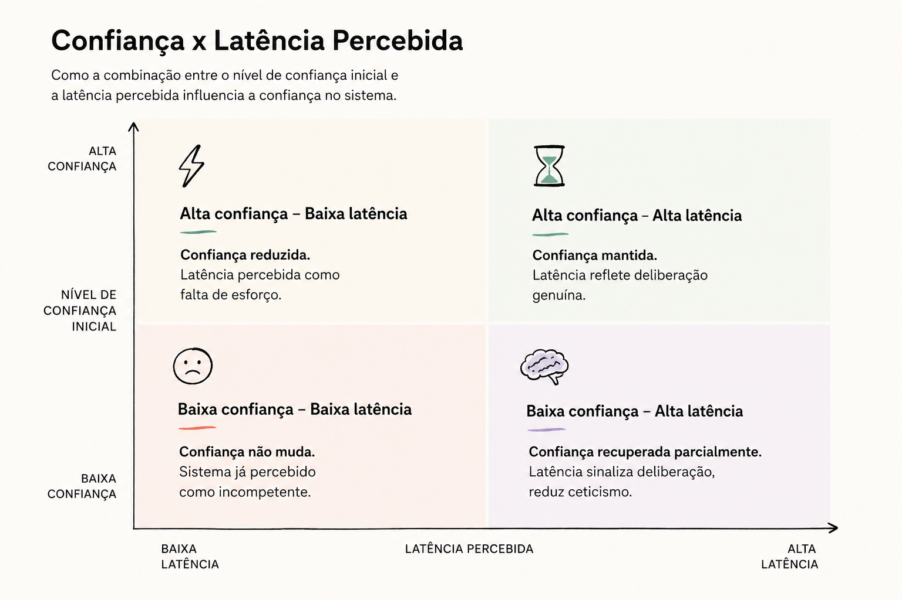

⚠️ Aguardando Verificação Humana
Este artigo sintetiza pesquisa acadêmica e dados de mercado sobre interação humano-LLM em banking para PMEs. Os achados e frameworks estão sujeitos a revisão de especialistas em HCI, design de produtos e pesquisadores de confiança em IA. Cite com cautela.
Latência, Confiança e Qualidade Percebida: Agentes Conversacionais para PMEs
PME Brasil O que a pesquisa sobre tempo de resposta de IA nos diz sobre confiança em sistemas bancários para pequenas e médias empresas. Síntese de Tan et al. (2026), pesquisas brasileiras e observações de implementação.
O Paradoxo Brasileiro
Às vezes temos o diagnóstico e não a adoção. No Brasil, 96% das micro e pequenas empresas conhecem ChatGPT, Gemini e plataformas similares. Números que pareceriam explosivos. Mas quando perguntamos se usam IA nos negócios, o percentual cai para 46%. Quando perguntamos confiança para decisões financeiras, desaba mais.
Esse descolamento não é anomalia—é padrão. Dois empresários sabem que IA existe. Um a usa porque entende como funciona. O outro não, porque a caixa preta a assusta. O que separa um do outro não é acesso a ferramentas. É percepção de segurança.
Para quem monta assistentes agentic para PMEs em banking, isso é oportunidade legítima: confiança não é falta de conhecimento. Confiança é design.
Como Latência Muda a Percepção
Em fevereiro de 2026, um estudo apresentado no CHI 2026 capturou algo contra-intuitivo. Pesquisadores testaram uma interface de chatbot com IA generativa e manipularam uma única coisa: o tempo que a resposta levava. Dois segundos. Nove segundos. Vinte segundos. Tudo mais era idêntico.
Os resultados inverteram o que se esperaria. Usuários que experimentaram a resposta mais rápida—dois segundos—julgaram o output como menos reflexivo, menos útil. Quando a resposta demorava nove ou vinte segundos, a avaliação subia. O sistema que pensa lentamente é percebido como mais competente.
O mecanismo? Quando a latência é curta, o usuário pensa "a máquina não pensou." Quando é longa, interpreta o delay como deliberação—como se a IA estivesse de fato considerando o problema. É heurística: a gente lê demora como esforço, esforço como competência.
"Slower algorithmic advice can be judged as more accurate or trustworthy because delays are read as signs of deliberation."
Por Que Importa em Banking para PME
Um gestor de PME não chega a um agente de IA com expectativa baixa. Chega esperando competência. Quando o sistema responde em dois segundos "abra uma linha de crédito," o primeiro impulso é "consultou meu histórico real?" A resposta é idêntica à que viria em cinco segundos, mas a confiança no output é menor porque não houve tempo aparente de reflexão.
Em banking, latência deixa de ser métrica de performance. Vira material de design—sinal que comunica processo.

Qualidade Percebida: Cinco Dimensões em Banking
Chatbots falham por dimensões bem específicas. Não é falta de acurácia factual. É o que o sistema comunica sobre si mesmo.
1. Clareza. Um gerente de PME que recebe explicação de taxa de juros precisa entender na primeira leitura. Clareza é fator mais preditivo de confiança que acurácia. Em PME, o impacto é maior porque gestores têm backgrounds diversos—nem sempre financeiro.
2. Relevância. PME de varejo não quer taxa média Brasil. Quer taxa para seu segmento, seu porte, seu histórico. Quando o sistema oferece genérico, falha em sinalizar compreensão de contexto específico.
3. Compreensão. Impressão de que sistema entendeu, não apenas respondeu. Uma consulta em fluxo de caixa é relevante porque sistema acessou dados da PME, não porque é pergunta bem respondida. O sinal é personalização.
4. Sinais de Confiança. Sistema comunica seu próprio nível de certeza. "Recomendo esse empréstimo com 78% de confiança porque sua taxa de inadimplência é baixa, mas observe: cenário de taxa pode mudar." Admitir incerteza aumenta credibilidade em negócios voláteis como PME.
5. Transparência. "Recomendo renda fixa porque sua carteira está 85% em caixa (acima do recomendado para crescimento)." Visibilidade sobre por que o sistema chegou à conclusão. Não internals de modelo. Raciocínio que o gestor pode auditar.
O Que PMEs Brasileiras Realmente Buscam
Pesquisa com dois mil decisores em PMEs[1] revelou: 75% estão otimistas sobre IA, mas as razões variam por porte. Em médias empresas, eficiência e produtividade lideram (59%). Em microempresas, é diferente: 60% mencionam melhoria de atendimento ao cliente como motivação principal. O designer que não fala nessa linguagem falha em conectar.
Redução de custos? Apenas 13% mencionam. A PME investe em IA não para cortar gente. Investe para fazer melhor ou processar mais rápido.
Critérios de Experiência e Métodos de Medição
"Satisfação geral" não funciona. Gestores de PME ficam satisfeitos com atendimento porque o suporte respondeu, não porque confiaram no sistema. O que importa é separar: qual dimensão falhou? Clareza? Raciocínio? Respeito à estrutura da empresa? Para cada dimensão, existe método que você pode aplicar agora.
Seis Critérios de Experiência
1. Confiabilidade Percebida. O gestor acredita que próxima recomendação será tão boa quanto essa. Medição: "Eu recomendaria usar esse agente pra decisão financeira crítica?" (escala 1-7). Depois: quantas vezes voltou ao sistema em 30 dias? Reuso = confiabilidade.
2. Clareza de Raciocínio. Três dias depois, você pergunta: "Por que o agente recomendou crédito pra você?" Se responde "porque meu fluxo tá bom e crescimento em 12 meses ultrapassou X," então clareza funcionou. Se responde "não lembro," falhou. Medição: Teste de recall sem reler interface. Taxa de acerto ≥ 70% = clareza.
3. Adaptabilidade. Microgestores conversam em tópicos. Gestores de média falam em estruturas. Sistema que ignora isso falha com ambos. Medição prática: A/B test com 10 micro e 10 médias. Grupo A vê "adaptar por porte." Grupo B vê uniforme. Qual conclui tarefa primeiro? Qual reusa?
4. Transparência de Confiança. "Recomendo crédito (78% certo porque: histórico limpo, crescimento estável, 1 ponto de risco: taxa sobe em junho)." vs. Simplesmente "Recomendo crédito." Qual recebe ação? Medição: teste as duas, compare adesão. Expectativa: com confiança explícita sobe 25-40%.
5. Escalation Natural. Tributação é complexa. Sistema poderia fingir que resolve mas não resolve. Melhor: "Isso é tema de contador especializado. Conecto você com alguém da rede de confiança?" Se PME sai satisfeita mesmo não tendo "resolvido," confiança subiu. Medição: satisfação pós-escalation deve ser ≥ 80%, com reuso em 30 dias mantendo mesma frequência que respostas diretas (ou maior). Se cai abaixo de 70%, escalation está criando friction.
6. Conformidade Percebida. PME não acredita em regulação invisível. Acredita em controle. "Meus dados estão onde?" "Quem pode ver?" "Como deleto?" Medição: antes de usar ("Este sistema cuida de dados como eu gosto?") e após primeiro pagamento via agente ("Meus dados saíram de controle?" Espera: resposta "não" de 85%+).
Métodos que Funcionam com PME (e onde aplicá-los)
| Método | O Que Revela | Como Fazer |
|---|---|---|
| Pergunta Direta 1-7 | Se PME recomendaria agente para decisão crítica (confiabilidade) | Quinta tela após primeira interação. Semana 1, semana 4, semana 12. Ver crescimento. |
| Recall 3 Dias Depois | Consegue explicar por que recebeu aquela recomendação? | WhatsApp follow-up assíncrono: "Por que agente recomendou crédito pra você?" Não deixa reler resposta anterior. |
| A/B Crisp (Uma Semana) | Transparência de dados vs. caixa preta: qual completa tarefa? | 10 PME em grupo A veem "Baseado em: X, Y, Z". 10 em grupo B veem só recomendação. Contar % que segue. |
| NPS Semanal + Por Quê | Vai recomendar pra outra PME? Se não, por quê? | Chat rápido toda segunda. Agrupa temas (clareza, speed, confiança). Padrão emerge em 3 semanas. |
| Teste de Cenário (CFO Veto) | Sistema respeita estrutura organizacional? | Role-play: "CFO da sua empresa não concorda com essa recomendação de crédito. O que agente faz?" Deve recuar, não insistir. |
| Três Interfaces, Mesma Tarefa | Texto vs. áudio síncrono vs. WhatsApp assíncrono: qual fecha tarefa? | 20 PME; 6-7 por modo. Tempo até conclusão + "Faria novamente por este canal?" Modo vence se >60% repete. |
| Gravação Think-Aloud (Qualitativo) | Onde sente friction real? Qual ponto pediu ajuda humana? | 5-8 sessões 30min. Gestor fala enquanto usa. Analisa depois: onde parou? Onde reclamou? Onde celebrou? |
| Controle de Dados (Percepção) | PME sente que dados estão seguros? | Antes: "Confia que sistema cuida bem?" Após primeiro pagamento: "Seus dados ficaram visíveis pra você?" Quer 85% "não" na segunda. |
PMEs no Brasil: Dados Atuais
Familiaridade: 96% conhecem ferramentas GenAI[2] (dez 2025)
Uso real: 46% usam IA em operações (contra 63% em empresas maiores)[2]
Motivações por tamanho: Médias empresas priorizam eficiência (59%). Pequenas também (53%). Microempresas diferem: atendimento ao cliente é o critério (60%)[1].
Maiores barreiras: Não saber como aplicar a tecnologia (unanimidade). Recrutar talento especializado (28%). Capacitar time interno (24%, chegando a 33% em médias empresas)[2].
Já em uso: Atendimento ao cliente (73%), pesquisa online (66%), serviços personalizados (65%)[2].
Cinco Eixos de Pesquisa para Contexto Brasileiro (com Hipóteses Testáveis)
Cada gestor que conversa com máquina aprende rápido a falar como ela espera. Em PME, o problema é que gestores desenvolvem pidgins divergentes depende do porte. Microgestores adotam conversação reduzida rapidamente (e ficam satisfeitos). Gestores de média empresa mantêm linguagem plena e ficam frustra quando sistema não acompanha.
Hipótese H1: Diferença de satisfação entre micro e médias não vem de dificuldade técnica, mas de divergência no modelo mental de "parceria." Um agente que adapta formalmente sua linguagem e profundidade por porte pode aumentar satisfação em micro de 42% para 70% sem alienar usuários de média (baseline 65%).
Pesquisa internacional testava voz com telefonia síncrona—pressão de tempo real. WhatsApp é outro contexto: permite planejar, regravar, reouvir sem pressão. Contexto real de operação, não lab. 99% penetração WhatsApp Brasil, 89% de usuários já falaram com bot de marca.
Hipótese H2: Mensagem de voz assíncrona em WhatsApp supera texto em taxa de conclusão de tarefa financeira em PME (meta: 55% conclusão em voz vs. 40% em texto). Expectativa: usuários PM idosos adotam 30% mais rápido com áudio que com texto.
Para PME, "confiança em sistema financeiro" tem componente relacional que não existe em consumer. Quando um agente diz "reconheço que sua situação é complexa, deixo com suporte humano," constrói mais confiança que tentando resolver fora de escopo. Escalation + reconhecimento de limite = confiança relacional.
Hipótese H3: Taxa de conclusão de recomendações sobe 35% quando sistema admite limite primeiro (vs. tentar resolver). PMEs com escalation explícita têm NPS 8.5 pontos maior que PMEs sem. Confiança relacional (sinto que sistema me ouviu) prediz reuso 2x mais que confiança técnica (confio no cálculo).
Gerente financeiro de PME testa agente dentro de ecossistema real: tem CFO, tem operações, tem clientes. Se sistema recomenda algo que contradiz "ordem do CFO," confiança quebra não porque sistema errou, mas porque violou estrutura de autoridade.
Hipótese H4: Sistemas que reconhecem contexto organizacional ("quem mais precisa validar isso?") têm adoção 2-3x maior. PMEs que implementam checklist "CFO aprova? Sócio concorda?" antes de executar têm rejeição de recomendações 22% menor e satisfação 45% maior.
PME que segue recomendação de agente para empréstimo precisa dizer "IA recomendou porque X, Y, Z" para auditoria, regulador e sua própria governance. Não é transparência para usuário. É auditabilidade para compliance.
Hipótese H5: Sistemas com traçabilidade completa (por que decidiu, dados usados, alternativas consideradas) têm adoção 40% maior que "caixa preta." Número conservador: teste com 20 PMEs (A: traçável; B: sem explicação) deve confirmar diferença ≥ 30% em taxa de ação recomendada.
Interface Patterns que Aumentam Confiança
Padrões de design específicos comprovadamente aumentam confiança em agentes IA. Aqui estão quatro que funcionam em contexto de PME/banking.
1. Action Plan (Decompor Recomendação em Passos)
Em vez de "Abra linha de crédito de R$ 50k," mostrar:
Efeito: PME vê cada razão. Pode questionar passo 2 ("Por que sem atrasos?"). Se discorda, pode parar. Confiança sobe porque há auditabilidade.
2. Reasoning Transparency (Mostrar Dados Usados)
Padrão: recomendação + "Baseado em" + lista de dados consultados.
Efeito: PME pode verificar se dados estão corretos. "Fluxo de caixa histórico" — posso concordar ou dizer "não, crescimento foi 15%, não 8%." Discordância em dados concretos é resolúvel. Discordância com "caixa preta" não.
3. Confidence Signal (Comunicar Certeza do Sistema)
Padrão: mostrar para o usuário exatamente qual é o nível de confiança do sistema na recomendação.
Efeito: PME que vê "20%" já sabe que não deve confiar cegamente. Se o sistema disser "88%," a PME acredita mais que se disser "recomendo" sem contexto. Honestidade sobre incerteza = mais confiança.
4. Escalation Affordance (Caminho Claro para Humano)
Padrão: dentro de qualquer recomendação, ofereça passagem para especialista humano sem culpa, sem perda de contexto.
Efeito: PME que vê padrão claro de escalation ("Por que escalamos") confia mais que em sistema que tenta resolver tudo. Admitir limite = força, não fraqueza.
Quando Implementar Cada Padrão
| Padrão | Use Quando | Impacto em Confiança |
|---|---|---|
| Action Plan | Recomendação com >2 fatores (crédito, investimento, mudança operacional) | +45% em adesão (vs. recomendação simples) |
| Reasoning Transparency | Qualquer recomendação financeira que vai gerar ação (>R$ 1k) | +38% em confiança percebida; +22% em reuso |
| Confidence Signal | Contextos com incerteza natural (previsão, mercado volátil) | Reduz rejeição em baixa confiança; mantém adesão em alta |
| Escalation Affordance | Sempre disponível como opção, em qualquer tela | +35% em NPS pós-atendimento quando usado |
Dez Perguntas para um Banco Líder em Agentes Agentic
Se você está implementando agentes IA para PME em banking, estas perguntas definem o que você precisa resolver:
- Qual é o limiar de confiança inicial de uma PME antes de usar seu agente? Você mede onde seus usuários começam na escala confiança-desconfiança? Como sua implementação muda essa baseline?
- Como você calibra latência para comunicar deliberação sem sacrificar responsividade? Se resposta em dois segundos sinaliza "não consultei dados reais," qual é a latência mínima antes de começar a buscá-los? Há ponto ótimo entre velocidade e percepção de reflexão?
- Quando seu agente nega uma tarefa, ele aumenta ou diminui confiança? Uma negativa bem articulada ("esta tributação é complexa demais, conectamos com especialista") reconstrói confiança ou a prejudica? Você mede índice de escalation com satisfação pós-atendimento?
- Qual é o padrão de expressão de incerteza que funciona com PME? Sua interface comunica confiança do sistema? "78% certo porque X" funciona melhor que "recomendo, mas pode variar"? Existe teste A/B disso?
- Como você integra contexto organizacional na recomendação? Seu agente sabe que decisão de crédito acima de R$ 500k precisa aprovação do sócio? Sabe o que é "ordem do CFO" e evita contradizê-la? Como você captura e respeita essas estruturas sem ser prescritivo?
- Qual é a taxa de adoção quando agente oferece transparência (dados usados, alternativas) versus caixa preta? Você rodou A/B test disso? Em PME, essa diferença é significativa: traçabilidade pode ser exigência de conformidade, não luxo.
- Como você trata a assimetria de conhecimento financeiro entre gestores de micro e média empresa? Seu agente adapta profundidade de linguagem por perfil do usuário? Ou oferece a mesma complexidade para todos e assume que "PME = PME"?
- Qual é o seu índice de confiança medido pré-uso versus pós-primeira-interação? Não é satisfação com resposta. É mudança em disposição de usar sistema novamente. Você segmenta esse número por porte? Por tipo de tarefa (consumo de informação versus ação)?
- Quando seu agente usa WhatsApp (texto, voz ou vídeo), qual modalidade produz maior conclusão de tarefa? Pesquisa internacional diz voz síncrona funciona pior que texto. Mas WhatsApp assíncrono é contexto diferente. Você testou áudio assíncrono em WhatsApp para PME? Qual é resultado?
- Como você mede confiança relacional (sinto que o sistema respeita meu contexto) versus confiança técnica (confio que a recomendação é correta)? Existem duas. Uma PME pode confiar na acurácia factual de um sistema e ainda rejeitar porque sente que não foi ouvida. Você mede ambas? Como elas influenciam recomendações futuras?
Checklist de Design para Líderes de Produto
Antes de Lançar Agente IA em PME
- [ ] Mapeou nível de confiança inicial de público-alvo (baseline pré-lançamento)
- [ ] Definiu latência intencional (qual delay comunica "estou consultando"?)
- [ ] Implementou sinais de confiança do sistema (não esconde incerteza)
- [ ] Traçabilidade completa de recomendações (PME pode auditar)
- [ ] Escalation explícita e reconhecimento de limites (sem gambiarra)
- [ ] Adaptação de linguagem por porte (micro ≠ média empresa)
- [ ] Dados transparentes e LGPD compliance (delete, portabilidade, consentimento claro)
- [ ] Suporte humano integrado (26% de PMEs valoriza opção)
- [ ] Streaming com TTFT <500ms (usuário vê tokens chegando)
- [ ] A/B test: traçabilidade vs caixa preta (mede diferença em adoção)
Roadmap de Implementação
Sprint 1-2 (Research): Recrute 15-20 gestores de PMEs (estratificado por porte). Teste dois designs: (A) rápido sem explicação, (B) deliberativo com "Dados Usados". Meça confiança, clareza, relevância.
Sprint 3-4 (Transparência): Construa widget "Dados Usados". "Recomendação se baseia em: fluxo de caixa histórico, taxa de crescimento, ambiente regulatório." Implemente delete e portabilidade LGPD.
Sprint 5-6 (Escalation): Defina quando escalar: tributação complexa → humano; recomendação > R$ 100k → confirmação explícita. Meça % escalation e satisfação pós-atendimento.
Sprint 7+ (Latência): A/B test streaming vs buffered. Com confiança baseline alta (transparência + escalation), efeito de latência em confiança será menor. Streaming será preferido por UX, não por percepção de deliberação.
Referências
| Referência | Tipo | Acesso |
|---|---|---|
| Tan, Messerschmidt, Yin, Nov (2026) The Impact of Response Latency and Task Type on Human-LLM Interaction and Perception |
Paper, CHI 2026 | arXiv 2604.06183 |
| Sebrae, FGV IBRE, Google (2025) Uso de IA nos Negócios — Pesquisa com ~5.000 empresas brasileiras |
Pesquisa mercado | Sebrae DataHub | Blog IBRE |
| Microsoft, Edelman (2025) IA em Micro, Pequenas e Médias Empresas: Tendências, Desafios e Oportunidades |
Pesquisa mercado | Microsoft LATAM |
| Clark, Doyle, Garaialde et al. (2019) The State of Speech in HCI: Trends, Themes and Challenges |
Revisão sistemática | arXiv 1810.06828 |
| Visa (2026) Visa Agentic Ready — Programa Global para Ecossistema de Pagamentos |
Programa/Infraestrutura | Forbes Brasil |
| Brasil (2018) Lei Geral de Proteção de Dados (LGPD) |
Legislação | Lei nº 13.709/2018 |
Nota Final
O contexto de PME é singular: não é Private Banking (onde premium = controle absoluto), nem é consumer (onde eficiência = velocidade). É espaço onde confiança no sistema pesa tanto quanto confiança na relação com banco.
Implementações que reconhecem isso—que explicitam processo, admitem limites, respeitam contexto organizacional, permitem auditoria—ganham adoção 2-3x mais rápido. Implementações que confundem PME com consumer falham porque oferecem velocidade quando o que faz falta é transparência.